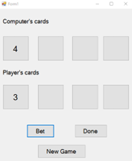

Windows Forms application is written to implement a card game. We have 4 buttons for computer and another 4 for users, the text field of those buttons will be left empty when the app launches. The reference user interface is shown as the picture bellow: .
. If the Bet button is clicked, the app will generate two random numbers from 1 to 13 to simulate the card, which will be given to computer and player, respectively (Hint, you can use two int arrays to store the card issued.). You can use the following code statements to obtain a random number from 1 to 13:
Random rndGen = new Random();
int p = rndGen.Next(1, 13);
If the number is smaller than or equal to 10,then the number will be displayed (and recorded in the array as mentioned above), other wise J for 11, Q for 12 and K for 13. (If you are still not able to use Random() to obtain a random number, you can hard-code the number then. No penalty for it. )
User can choose to click Bet button again, and another two numbers will be generated, displayed and stored just like in step 2. The game will end, if 4 cards have been given to player and computer, and result will be announced then. The judging criteria can be found in the following description.
User can click the Done button to end the current game and a MessageBox will be displayed to show the winner. The winner is the one a) The summation of all the four cards is bigger than that of the other player, where J,Q and K will be treated as 0.5 in summation and other numbers (1-10)will be the numbers themselves; b) The summation is smaller than 10, or we call it blast c) If all blast, then computer wins d) If the summation is tie and no one blasts, the player wins